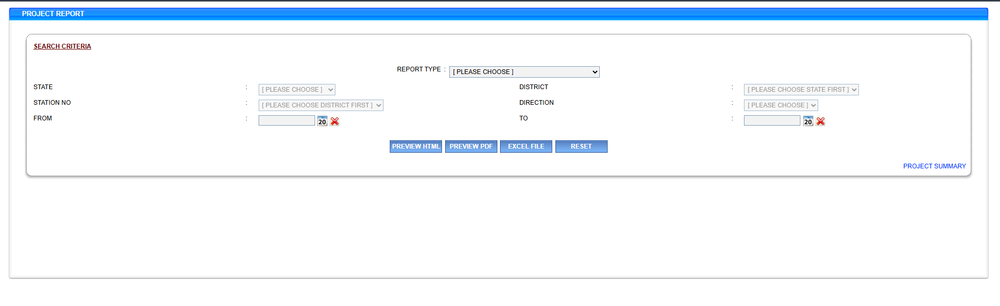
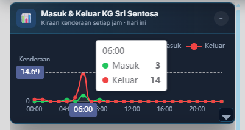
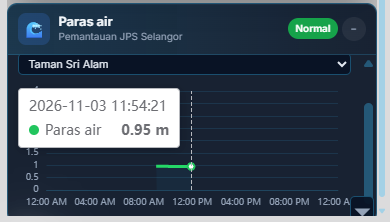
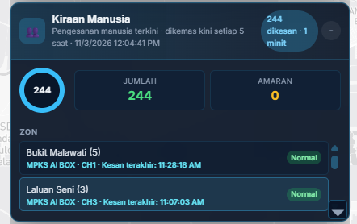
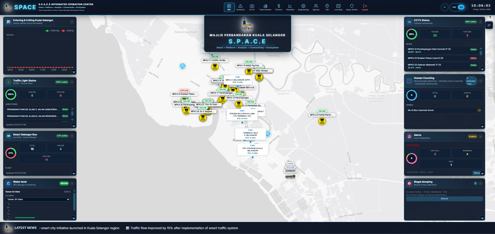

Internship Dashboard
INTERNSHIP PORTFOLIO · 2026
Hello, I'm Nur Syafiah.
Nur Syafiah Binti Zainuddin
Programmer Intern
Exploring web development, database management and practical software engineering through real-world internship experience.
INTERNSHIP DURATION
14 Weeks
Professional experiencePOSITION
Programmer
MAIN TECHNOLOGY
PHP, Python & MySQL
Web and database development01 / INTRODUCTION
About Me
My name is Nur Syafiah Binti Zainuddin. I am a Computer Science student undertaking a 14-week internship as a Programmer. Throughout this internship, I have the opportunity to apply my academic knowledge in a professional working environment, particularly in programming, website development and database management.
02 / ORGANISATION
Company Background
aRFi Technologies Sdn Bhd
Integrated ICT & Digital Surveillance Solutions
About the Company
aRFi Technologies Sdn Bhd is a multidisciplinary technology company based in Selangor, Malaysia. The company focuses on providing integrated ICT solutions, digital surveillance systems and technology-driven services to support modern infrastructure and business operations. Its business activities include professional CCTV systems, AI-based simulation, surveillance solutions and other integrated technology services. Through its projects and collaborations with various organisations, aRFi aims to deliver reliable and effective technological solutions.
Organisation Overview
Core Business Activities
- Integrated CCTV and surveillance systems
- AI simulation and technology solutions
- Digital monitoring and infrastructure solutions
- ICT system development and integration
MANAGEMENT STRUCTURE
Organisation Board
The following chart illustrates the organisational structure and management hierarchy of aRFi Technologies Sdn Bhd.

COMPANY GALLERY
Events & Project Showcase
A collection of company activities, events and projects.

03 / INTERNSHIP JOURNEY
Weekly Activities
A chronological overview of my activities and responsibilities throughout the 14-week internship.
Introduction & Orientation
Update with your actual first-week activities.
System Familiarisation
Update with your actual second-week activities.
Programming & Database Tasks
Insert the programming and database work completed.
Website Development
Describe your actual website development tasks.
System Enhancement
Insert your actual improvements and assignments.
Database Management
Describe your database management responsibilities.
Testing & Troubleshooting
Insert actual bugs, testing and solutions.
Final Tasks & Documentation
Update with your final internship activities.
04 / DEVELOPMENT WORK
Projects & Technical Tasks
A summary of the projects I contributed to and the work I completed during my internship.
Web Application for aRFi / Office
Developed a website to make project reporting easier for project managers and help technicians manage maintenance and new installation work.
My Contributions
- Built website features for project reporting.
- Supported technician workflows for maintenance and new installations.
Project link to be added

National Traffic Census – KKR
Helped maintain the National Traffic Census project for Malaysia’s Ministry of Works (KKR).
My Contributions
- Created a new formula for the project.
- Inserted data into the database and monitored whether it was recorded correctly.
- Learned the project workflow and maintenance process.
Project link to be added




IOC Dashboard – MPKS
Contributed to about half of the IOC dashboard for Majlis Perbandaran Kuala Selangor (MPKS).
My Contributions
- Learned to use Docker and create dashboard widgets.
- Retrieved data through APIs and learned to connect it to the AI Box.
- Checked that the dashboard data was accurate.
CentOS to Ubuntu Migration
Transferred application code from a CentOS environment to Ubuntu and adapted it for the new environment.
My Contributions
- Moved the application code to the Ubuntu environment.
- Adapted the application to a different Linux environment.
05 / TECHNOLOGY STACK
Technical Skills
Technologies and technical areas explored during my internship.
06 / PROBLEM SOLVING
Challenges & Solutions
Programming Errors
Identifying and understanding errors during development.
Review code, trace errors and test possible solutions.
Database Issues
Understanding database queries and data-related problems.
Check SQL queries, database structures and data consistency.
07 / PERSONAL DEVELOPMENT
Reflection & Learning Outcomes
Technical Knowledge
Improved understanding of programming, web development and database management.
Problem Solving
Developed a more systematic approach to identifying and resolving issues.
Professional Growth
Gained exposure to professional responsibilities and working practices.
END OF PRESENTATION
Thank You!
Nur Syafiah Binti Zainuddin
Programmer Internship Portfolio · 2026